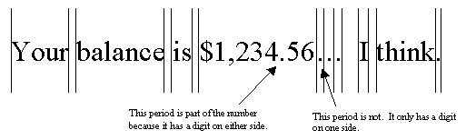
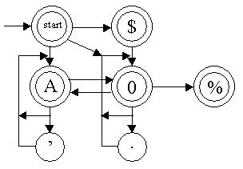
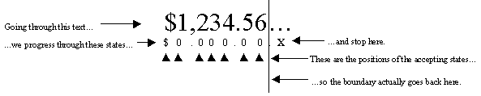
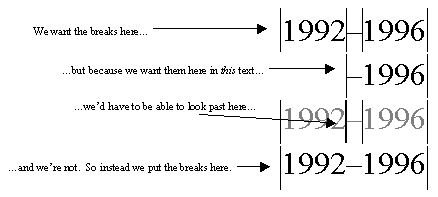
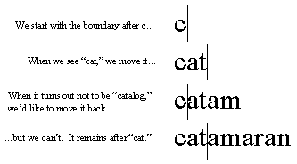
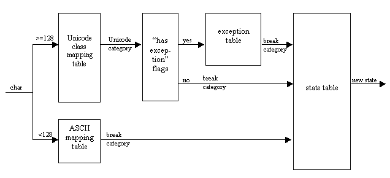
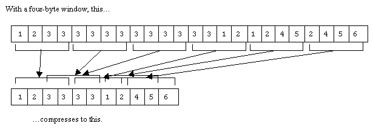
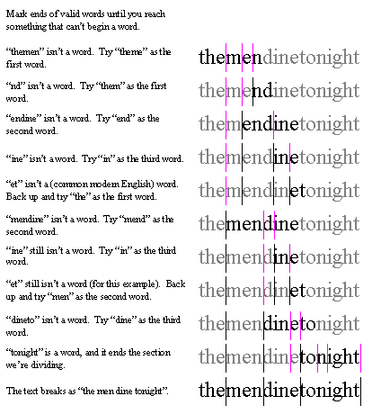

Text Boundary Analysis in Java
Imagine you’re writing a text-editing application. The editor must wrap words so that words stay together on a line, but what constitutes a "word" for the purpose of performing this operation?
The simplest answer is a series of non-whitespace characters followed by a series of whitespace characters. But Japanese and Chinese don’t separate their words with spaces—a line break can occur anywhere, even in the middle of a word. And actually, both Japanese and Chinese do have punctuation and diacritical marks that can’t start or end a line, so this must also be taken into account. Thai also doesn’t separate its words with spaces, but in Thai, the application still must not break in the middle of a word.
Even in English, the problem is more complicated than simply keeping a run of non-whitespace followed by a run of whitespace together: Some whitepsace characters (such as the non-breaking space) prevent line breaks, and some non-whitespace characters (such as hyphens and dashes) allow line breaks. Worse, the behavior of some characters is context-dependent: a break is allowed after a hyphen when it’s followed by letters, but not when it’s followed by numbers (where it functions as the minus sign).
Furthermore, what constitutes a "word" depends on the operation you’re performing on the text. For word wrapping, you want to keep a word together with any punctuation adjacent to it, and with any whitespace that follows it, but if you do a find-and-replace operation with the "whole words only" option turned on, these characters must be separated from the word itself, or the find operation will fail to match the word. [From here forward, all examples in this paper will deal with this kind of word-break iteration, rather than with detection of possible line-break positions.]
These problems are the motivation behind the BreakIterator framework in the Java class libraries. They are also cases of the general problem of text-boundary analysis, or the breaking down of a large body of text into its constituent elements according to some set of criteria. The Java BreakIterator class was written by Taligent, a subsidiary of IBM, now part of IBM’s Center for Java Technology. We recently completed a totally new and updated version of the framework that will be made available on IBM’s Alphaworks Web site. This paper examines the internals of both frameworks and explores some of the issues that come up when designing a framework for text boundary analysis.
As with the other international frameworks in the Java Class Libraries, BreakIterator follows a data-driven model: whatever the desired behavior, the basic algorithm remains the same and the data tables driving it vary. The current version of BreakIterator provides four predefined types of text-boundary analysis:
All four type of analysis are performed by a single class, SimpleTextBoundary, using four different sets of data tables.
A simple and powerful data-driven approach to this problem is to base the behavior on character pairs: whether to place a break at a given position is determined by the characters on either side of the prospective break position. The Japanese JIS-X 4051 standard for line composition in Japanese, for example, uses this approach. This approach actually works quite well, and will handle the examples described above. A word-selection table would put breaks between punctuation and letters and between letters and whitespace, but not between consecutive letters or consecutive whitespace characters. A line-wrapping table would put a break between a space and a letter or punctuation mark, but not between a letter or punctuation mark and a space. A line-wrapping table would never put a break on either side of a non-breaking space, and would put a break between a hyphen and a letter, but not between a hyphen and a digit. A Japanese line breaking table would put a break between consecutive Kanji characters, but not between a Kanji character and an ending punctuation mark.
The pairs approach is also very simple to implement: the data table is simply a two-dimensional array of Boolean values, with each row and column corresponding to a character or character category. One axis represents characters before the possible break position and the other axis represents characters after it. This is an example of how such a table for word boundary detection might look (the rows represent the first character; the columns, the second). Xs indicate positions where breaks should go.
| ltr | pun | - | ’ | sp | dgt | . | |
| letter | X | X | X | ||||
| punct | X | X | X | X | X | X | X |
| - | X | X | X | X | X | ||
| ’ | X | X | X | X | X | X | |
| space | X | X | X | X | X | X | |
| digit | X | X | X | X | |||
| . | X | X | X | X | X | X |
The pairs approach doesn’t require or consider any context; it only has to look at two characters to determine whether there’s a break between them. This is both a strength and a weakness: The strength is that it makes random access into the document easier. The weakness is that there are a lot of situations that require looking at more than two characters to produce truly optimal results.
Consider the ASCII apostrophe character. It can be used as either an apostrophe or a single quotation mark. When finding word boundaries (i.e., the "find whole words" example), an apostrophe is considered part of a word, but a quote mark isn’t. It’s generally impossible to determine definitively whether the ASCII apostrophe is being used as an apostrophe or a quote mark, although one can come quite close using a dictionary-based algorithm. Without going to all that extra trouble, a good rule of thumb is that the ASCII apostrophe character should be treated as an apostrophe (i.e., counted as part of the word) if it has a letter on either side and as a quote mark (i.e., separated from the word) the rest of the time. However, doing this requires looking at three characters. Similarly, a period or comma can either be punctuation or a decimal point, depending on whether or not it is flanked by digits. This also requires looking at three characters.

Unicode non-spacing marks also complicate the algorithm. Non-spacing marks always stick to the character that precedes them, but are generally otherwise transparent to the break algorithm. This means the breaking engine must scan to either end of a run of non-spacing marks to determine whether there should be a break immediately after them or not.
Sentence breaking is especially difficult, requiring greater levels of lookahead or look-behind to do a reasonable job. There are certain characters that we know always terminate a sentence: for example, the question mark or exclamation point in English, or the ideographic period in Japanese. But the break position doesn’t go immediately after one of these characters: these characters may be followed by ending punctuation (such as closing parentheses or quotation marks), a run of whitespace, and possibly even a paragraph separator. But, with the exception of the paragraph separator, these characters are not significant when the occur before a terminating character—whitespace, of course, can occur many times in the middle of a sentence.
The period in most Western languages is even more ambiguous. Not only may it be used as a decimal point, it also may follow an abbreviation. And that abbreviation may end the sentence. Again, it’s really impossible to definitively determine the semantics of a particular period character without a language model, but an approximate heuristic involves checking to see whether the word following the period begins with a capital letter. This requires not only considering some arbitrary number of characters before the prospective break position, but also considering an arbitrary number of characters after the prospective break position.
It’s possible, of course, to extend the pairs-based approach with special-case code to handle the characters that require additional lookahead, but we took an approach in the Java framework that we believe is simpler and more powerful. This approach is based on a finite state machine.
Consider the following set of rules, which is a subset of the rules we actually use for word-boundary detection:
These rules produce this state table:

To save room, the characters in the circles indicate which class of input characters cause a transition into that state:
| A | letter |
| 0 | digit |
| ’ | intra-word punctuation |
| . | number punctuation |
| $ | number prefix |
| % | number suffix |
The double circles denote accepting states. The algorithm begins in the "start" state in the upper left-hand corner and transitions from state to state until it reads an input character for which there is no transition out of the current state. If the current state is an accepting state, the break position is after that character. Otherwise, the break position is after the last character that caused a transition to an accepting state. (In other words, we keep track of the break position, updating it to after the current position every time we enter an accepting state. This is called "marking" the position.)
The rule about moving back to the last terminal state is what gives us the lookahead capability. For example, in the sequence "$1,234.56…", there will be a break between the number and the ellipsis. The state machine would be in the "0" state after reading the "6." It would transition to the "." state after reading the first period. But the only legal transition out of the "." is back to the "0" state, so iteration would stop after reading the second period. The last terminal state we passed through was the "0" state, so we would put the break position after the character that caused us to transition into that state, the "6," putting the break between the number and the ellipsis.

The state machines are always deterministic; the only rewinding that happens occurs when iteration stops. The state machine is implemented as a two-dimensional array, so iteration is actually as fast as iteration using a pair-based algorithm. For each character visited, the code looks up a character category, looks up a state transition, and updates the break position if the new state is a terminal state.
To keep things simple and efficient, the state machine in BreakIterator isn’t as complicated or as robust as the state machine in a generalized regular-expression-search utility. Our implementation of the state-machine algorithm has two limitations. One is that all context is lost after the state machine stops. Our standard for word boundary detection is that punctuation characters all have a boundary on either side, except for a few that can occur inside a word or number. Dashes and hyphens are ambiguous: When it precedes a number, a dash should be treated as a minus sign and kept with the number, but the rest of the time it should be treated like all other punctuation and have a boundary on either side. Therefore, the dash in a range of dates (e.g., "1992–1996") should be treated as punctuation and have word breaks before it and after it. Putting a break before it is simple, but to determine whether there should also be a break after it, we’d have to know that the character before the dash is a digit. Because the state machine stopped when we put the break before the dash, we’ve lost that state. There’s no way to base breaking behavior on characters that occur before the preceding break. Since we couldn’t put a break both before and after the hyphen, we opted instead not to put a break in either place. In other words, we treat the dash the same way as the decimal-point and thousands-separator characters. Our code will keep the whole expression "1992–1996" together. And since there are many numbers (stock numbers, telephone numbers, Social Security numbers, etc.) that include dashes, this actually produces better results than if we followed the "break on either side of punctuation" rule.

We also don’t support marking a position conditionally based on characters that follow it. To take a contrived example, say that you wanted to put a break after every character unless you saw the word "catalog." If you see "catalog," you want the break position to go after "cat." If, on the other hand, you see "catamaran," you would want the break to go after "c" (because you want a break after every character unless you see "catalog"). Our algorithm doesn’t allow for backing up the break position after we’ve found that a rule mismatches the text, so we’d always keep "cat" together, no matter what characters follow it.

Backing up the break position is actually possible without completely overhauling the algorithm, but it has some cost in code complexity and iteration performance, and we have yet to encounter a real-world situation where it is necessary.

It’s obviously impractical—and unnecessary—to have one column of the state-transition table for every Unicode character. Instead, characters are grouped into categories based on their breaking behavior. The current BreakIterator code in the JDK does this with a two-level lookup. First, a character’s Unicode character category is looked up and the character is assigned a breaking category based on the Unicode category. But since characters in the same Unicode category could behave differently (for example, Arabic letters and Han ideographs are both in the "other letter" category), there is an override table that lists all the characters whose breaking category should be different from the one for their Unicode category. There is also a table of flags indicating whether a given Unicode category has overrides. For a category with overrides, the override table is binary-searched to derive the breaking category. Since this can be rather slow, there is also a fast-path category table for characters in the ASCII range.
The new version of BreakIterator uses CompactArray to do character-category lookup. A CompactArray is a class that was designed specifically for applications like character-category lookup. The data is stored contiguously in an array, but divided up into blocks. If two blocks are identical, or overlap, the blocks are consolidated. A separate index is used to indicate the location of each block in the compressed array. For arrays of data containing long stretches of the same value (or the same pattern of repeating values), considerable compression is possible, and lookup is very fast (just two regular array lookups). CompactArray is used in a number of the Java internationlization classes.

The state and category tables in the current BreakIterator implementation in the JDK are complicated and cryptic, making them hard to maintain. There is also only one set of these tables which is used for all languages, making it impossible to support two languages with mutually-exclusive breaking behavior. For example, in Japanese, most word processors handle a double-click by selecting an entire contiguous run of Kanji characters. This works reasonably well, since Kanji characters in Japanese are usually broken up by Kana characters, Latin characters, and punctuation. In Chinese, this behavior will usually select a whole paragraph—instead, you want a double click to select only a single Han character. Our current framework doesn’t support this. The current BreakIterator implementation also doesn’t allow clients to customize the behavior of a BreakIterator—if the built-in classes don’t support something the client wants to do, the client must create a completely new BreakIterator subclass of his own—he can’t leverage the JDK code at all.
For all of these reasons, we undertook an extensive revision of the BreakIterator framework, which will be available on IBM’s AlphaWorks Web site. The centerpiece of this new framework is the RuleBasedBreakIterator class. This class essentially works the way the old class did (except for the new category-lookup mechanism and some small changes to the iteration algorithms), but it builds the category and state tables from a textual description. This description can be loaded from a resource, allowing different sets of breaking rules for different languages, or supplied by the client, allowing customization. The description consists of a series of rules, each of which is either a substitution definition or a regular expression.
The regular expression syntax is similar to that used by grep and perl, but omits many features of those languages. The whole rule-description syntax is similar to BNF, with a few differences:
A complete set of the special symbols is listed below:
* match zero or more of the expression that precedes the asterisk () encloses a sequence of characters. An expression in parentheses may be followed by *, causing the whole sequence to repeat. | separates alternative expressions. Only valid inside (). [] encloses a group of alternative characters. Inside [], the following additional characters can be used: - specifies a range of characters leading from the character before the hyphen to the character after it, inclusive. The range is figured by binary Unicode value—language-specific collation rules are not taken into account. ^ omits the following character (or group of characters in []) from the set :: encloses an identifier for a particular Unicode character category. Adds all characters in that category to the set. The identifier between the colons is one of the two-letter identifiers in the Unicode database (e.g., "Ps" for stating punctuation or "Sc" for currency symbols). The user can also specify just the first letter of the category code to include all categories beginning with that letter (e.g., ":L:" would mean "all letters" and be equivalent to ":Lu::Ll::Lt::Lm::Lo:"). <> encloses the name of a substitution = defines a substitution. The left-hand side of the substitution is a name in <>, and the right-hand side is an expression in [] or (). {} encloses a sequence of characters that is optional . matches any single character *? specifies a non-greedy match instead of a greedy match. Both will give the same result unless there is overlap between the repeating characters and the characters that follow the *? expression. ! precedes a rule that is to be used to specify backward iteration / specifies the position of the boundary if the text matches this rule (if not specified, the boundary goes at the end of the matching text). ; Separates rules from one another. \ escape character. Causes the next character to be treated as a literal character rather than a special character. All non-alphanumeric and non-control characters in the ASCII range are reserved, and must be preceded by \ even if they don’t have a special meaning to the parser now.
For example, using the characters described above, a simplified subset of our word-boundary-detection algorithm (the same subset as shown in the state diagram on page 5) would be represented this way:
<let>=[:L:];
<dgt>=[:N:];
<mid-word>=[:Pd \"\’\.];
<mid-num>=[\"\’ \.\,];
<pre-num>=[:Sc:\#\.^¢];
<post-num>=[\%\&¢];
<word>=(<let><let>*(<mid-word><let><let>*)*);
<number>=(<dgt><dgt>*(<mid-num><dgt><dgt>*)*);
{<word>}(<number><word>)*{<number>{<post-num>}};
<pre-num>(<number><word>)*{<number>{<post-num>}};
The first eight lines are substitution definitions. They allow the name on the left-hand side of the = sign to be used in place of the expression on the right. The first six lines define character categories. Notice that these categories can overlap: both <mid-word> and <mid-num> include the quotation marks and the period. The actual character categories used by the BreakIterator are derived automatically from the expressions used in the description.
<word> and <number> specify subexpressions used in the actual rules, allowing them to be shorter and less complicated. A <word> is one or more letters, optionally followed by a <mid-word> and one or more letters. The <mid-word>/letter expression can repeat, so this expression basically says "a <word> is a sequence of letters that may contain <mid-word> characters, so long as there are never two <mid-word>s in a row and the sequence doesn’t begin or end with a <mid-word>." The <number> definition specifies the same pattern for digits and <mid-num>s.
Finally, the last two lines are the actual regular expressions that specify the break behavior. The first line says to keep together any sequence of words and numbers. If this sequence ends with a number, it may also include a number-suffix character. The second line is the same as the first, but allows a sequence of words and numbers that begins with a number to have a number-prefix character before it.
Rules in a BreakIterator description are effectively OR-ed together, and the BreakIterator normally uses a longest-match-wins algorithm. Our build algorithm parses the regular expressions, builds the state table, and makes it deterministic in a single pass (with a separate pass at the end to minimize the number of states) without building any intermediate data structures.
Supporting sentence-boundary detection required the addition of several other behaviors to the regular-expression parser. The main sentence-break rules are as follows:
.*?<term>[<term><period><end>]*<space>*; .*?<period>[<period><end>]*<space>*/<start>*<sent-start>;
<term> is the set of all sentence-terminator characters (e.g., "?" and "!"), <start> is starting punctuation (e.g., opening parentheses and quotes), <end> is ending punctuation (e.g., closing parentheses and quotes), <period> and <space> are self-explanatory, and <sent-start> is anything that is not in one of the other categories and also isn’t a lowercase letter or digit (i.e., any character that can begin a sentence).
The period is the "match any character" character, and so ".*" means "match zero or more of any character." But we generally don’t want to use a longest-match-wins algorithm with ".*"."[a-z]*abc" would match the longest sequence of letters that ends in "abc", when what you probably want is to match the shortest sequence of letters ending in "abc". The ? modifies * allow this. Thus, "[a-z]*?abc" matches the shortest sequence of letters ending in "abc". So ".*?" in the above expression matches characters until it encounters a <term> (sentence terminator, e.g., ? or !). Then it advances across any ending punctuation and any trailing whitespace before marking the boundary position.
The slash is the "put the break here" character. The second rule works the same as the first, but since a period is ambiguous, we must advance past the break position and any starting punctuation and look at the first character of the next word. If it is a <sent-start> character (anything except a lowercase letter or a digit), we mark the position after the whitespace (where the / is) as the break position. Otherwise, everything is actually considered to match the ".*?" token and we go back to looking for periods.
One interesting thing this approach to specifying break-iterator rules highlights is that the new Java BreakIterator framework is basically just a specialized regular-expression-matching framework.
Another addition to the old algorithm is the concept of an "ignore character." Ignore characters were added specifically to handle non-spacing marks and format-control characters, which by definition don’t generally affect text-boundary positions. An ignore character is a character which is transparent to the iteration algorithm. The iterator passes over ignore characters with no change in state. A break never occurs before an ignore character—if there is to be a break between the characters on either side of a sequence of ignore characters, it always occurs after the sequence of ignore characters.
Ignore characters are specified with the substitution-definition syntax: If you define a substitution named <ignore>, the characters it refers to are considered to be ignore characters (unless they’re also referred to elsewhere in the description).
The current version of RuleBasedBreakIterator does not offer specific support for surrogate pairs, although they can be handled using the current capabilities. If an entire block of surrogates is assigned to the same category, the high surrogate in the pair can be assigned to that category and the low surrogate can be made an ignore character. If different surrogate pairs in the same block have different behavior, additional rules have to be specified to show this. One possible future enhancement is to allow surrogate pairs to be treated specially by the iteration algorithm and assigned to character categories just like single Unicode characters.
One problem with the state-table-based approach to text-boundary analysis is that it makes reverse and random-access iteration more difficult. This is because the state table considers context: to accurately locate a boundary position, you have to start from a known break position or the beginning of the document (which, by definition, is a known break position). Beginning iteration from a random spot in the document will lead to erroneous results.
Both the old and new BreakIterator implementations handle this problem by having a second state table that is used for reverse and random-access iteration. This extra state table doesn’t require context: you can begin iterating backwards from anywhere in the document. Instead of replicating all of the behavior of the forward state table in reverse, it simply provides a way of locating a "safe place" from which it is possible to start iterating forward again. Thus, moving backward a step in the document involves backing up to the preceding safe position, iterating forward until the original position is reached, and returning the position of the last break encountered before the starting position. Random-access iteration works the same way: we back up from the starting position until we find a safe position to stop, then turn around and iterate forward until the desired position is reached.
RuleBasedBreakIterator also derives the backward state table automatically from the rules the user specifies. But deriving a fully-reversed version of the forward state tables turns out to very complicated and generally unnecessary. Instead, we use the "pairs" algorithm, where we consider only the characters on either side of a prospective break position to determine whether to stop there. It’s a relatively simple matter to exmaine the forward state table to pairs of characters we always break between. This isn’t 100% optimal: it will cause us to skip some actual break positions, but in practice it works quite well.
The one case where this approach doesn’t work well is sentence-boundary detection. With the rules used by the current JDK, at least for English, the only places where we can reliably stop based only on pairs is after a Unicode paragraph separator. This is terribly inefficient, especially in long documents that don’t use the Unicode paragraph separator to separate paragraphs.
We considered several different ways of automatically generating a state table that eliminated this problem, but every approach was too complicated to be workable. Instead, we fall back on relying on the user to tell us where the break positions would be: the client can include additional rules in the BreakIterator description that are used to augment the automatically-generated backward state table with information that allows it stop at more break positions. These additional rules are distinguished from regular forward-iteration rules by preceding them with a !. For sentence-break iteration, we added the following two rules:
!<sent-start><start>*<space>*<end>*<period>; ![<sent-start><lc><digit>]<start>*<space>*<end>*<term>;
When we augmented the automatically-generated backwards sentence-boundary state table with these rules, we were able to get backwards sentence-boundary iteration performance up to an acceptable level.
Some languages, such as Thai, don’t use spaces between words, but still require line wrapping to occur only on word boundaries. Other languages, such as Japanese, can put line breaks anywhere, including the middle of a word, but may need to locate real word boundaries for other things, such as database indexing. Some languages, such as German and Korean, often use long compound words which must be broken up into their constituent parts for some types of processing. The thing that all of these problems have in common is that there are often no unambiguous cues in the text as to where a word boundary is. One must find word boundaries by comparing the text being analyzed with a list of known words. The old BreakIterator framework doesn’t support this capability. The new one introduces a new class, DictionaryBasedBreakIterator, specifically for this.
DictionaryBasedBreakIterator is a subclass of RuleBasedBreakIterator and uses the regular rule-based algorithm to identify the endpoints of sequences of characters that must be further divided using the dictionary. This way, we only incur the additional cost of dictionary-based iteration when it is truly necessary, and we can take advantage of natural "signposts" in the text (such as punctuation and spaces) to help us divide it up.
DictionaryBasedBreakIterator adds one item to the rule syntax: it defines another special substitution name, <dictionary>, which identifies characters that occur in sequences that require the dictionary. Whenever the iterator encounters two or more <dictionary> characters in a row, it invokes the dictionary.
The dictionary is itself implemented as a state machine. Our current implementation uses a two-dimensional array that is heavily compressed and indexed (the exact details are still proprietary because they’re still in flux). The advantage of this scheme is that, like CompactArray, it allows fast lookup and lookup speed is not dependent on the size of the dictionary. The compression produces a file that, with indexes, is generally less than 25% larger than the raw word list it encodes if the original word list was in a single-byte encoding, and significantly smaller than the raw word list if the raw word list was in Unicode.
Our iteration algorithm is more complex than the straight maximal-match algorithm often used for this kind of word breaking. As we advance through the text being divided, we keep track of every possible word-break position we encounter along the way. If we reach the end of the range being divided and it’s a word boundary, we’re done. If we reach a character that doesn’t match anything (for example, in English, there are no words starting with "thisl", so we’d get a mismatch when we reached the "l"), we back up to the last possible break position, mark it as a real break position and start over from that point. In this way, we continue trying combinations of word-boundary positions until we either find a valid sequence of words that uses all the characters in the range, or we exhaust our possibilities.
To see how this works, consider the following example. We start by looking for a maximal match, which gives us "theme" for the first word, but "nd" for the second word. So we back up and try "them" for the first word. We get as far as "end" and "in" before getting to "et." (For the purposes of this example, we’re going to say "et" isn’t a word. It’s definitely unusual in modern American English.) So we have to back all the way back to the beginning and try "the" as the first word before we finally make it all the way through the string we’re trying to divide with valid words all the way.

If we exhausted our possibilities without finding a valid sequence of words, it either means there’s an error in the text, or the text includes a word that isn’t in the dictionary. In either case, we restore the set of break positions that matched the most characters, advance one character past where the mismatch occurred in that sequence, and start over from there. This works pretty well: usually only one or two boundary positions around the error are in the wrong place.
In either case, we will eventually make it from one end of the range being divided to the other. At this point, we’ve found all the word-break positions in this range, and we cache them all so we don’t have to do this work again until the iterator leaves this range.
The only situations where our dictionary-based algorithm produces wrong results are places where a sequence of characters can be divided up into legal words in more than one way. In this case, we opt for the sequence with the longest starting word, which isn’t always right: Since I don’t speak Thai, I tested this algorithm using the Declaration of Independence with the spaces taken out. The first phrase, "When, in the course of human events…" came out as "When, in the course of humane vents…" The phrase "a long" came out as "along," and, my personal favorite, the phrase "to pass" came out as "top ass." The only way to prevent this type of thing, however, is with some kind of sophisticated language model, which is probably overkill for simple word wrapping and word selection. One possible approach may be to expose a subclassing API that allows clients to add this kind of extra functionality. In the meantime, a user can always clear up the ambiguity by inserting zero-width spaces into the text as needed.
The new BreakIterator framework is available now in Java for free at IBM’s Alphaworks site: http://alphaWorks.ibm.com. We are currently negotiating with Sun to roll this version into future versions of the JDK: Keep an eye on http://www.java.sun.com and http://www.ibm.com/java for news. A C++ version will be available as part of IBM’s International Components for Unicode technology sometime in early 1999. Keep an eye on http://www.ibm.com/java/tools/international-classes/ for developments. You can also write to me at rgillam@us.ibm.com if you have questions.
As with most achievements, I have certainly stood on the shoulders of giants in this project. The original designer and author of BreakIterator was Mark Davis, who also contributed much information, feedback, ideas, and guidance in this redesign. The original author of the Java version of BreakIterator was John Fitzpatrick. I thank my manager, Kathleen Wilson, for letting me take the time to do this project, and all of the other members of the JTC Text & International team—Laura Werner, Helena Shih Chapman, Doug Felt, Alan Liu, Bertrand Damiba, John Raley, Norbert Schatz, and Eric Mader, for their suggestions and feedback through the course of this project and especially for putting up with me through what was often rather difficult work. Finally, I credit Alfred Aho and Jeffrey Ullman, the authors of the infamous "Dragon Book," Principles of Compiler Design, from which I learned a lot about regular-expression parsing, and from which I adapted the algorithm for minimizing the states in a state machine.